A Brief History of Photo Manipulation
Fakes, retouching... from the origins of photography to today.

In advertising, fashion, etc., photos are often, if not always, retouched. With digital tools, photo retouching seems accessible to everyone. But today, as politicians consider laws to limit retouching, can we accuse Adobe (publisher of Photoshop) of being the origin of photo manipulation?
The answer is no. Photo manipulation, and especially retouching, is almost as old as photography itself.
Understanding the terms
- Development: The step of reproducing the image from the negative onto photo paper. Contrast or brightness modifications can already be applied here.
- Digital development: Using the RAW format (the digital negative) to adjust settings without destructively altering the base pixels.
- Retouching: Significant modification of an image (erasing wrinkles, slimming a waist, changing a color) for aesthetic reasons.
- Manipulation / Photomontage: Altering the meaning of the photo by adding or removing key elements (characters, scenery).
Invention & Evolution
From Aristotle and his study of the pinhole camera to Leonardo da Vinci, the foundations were laid. In 1839, the Daguerreotype became official. Later, in 1884, George Eastman revolutionized the market with flexible film and Kodak.
The Electronic Era
In 1981, Sony launched the Mavica. In 1989, Canon released the Xapshot, which took digital photos but stored them analogically.
February 1990 marked the birth of Photoshop 1.0 by the Knoll brothers, acquired by Adobe. In 1994, version 3.0 introduced layers: a revolution for editing.
Chronology of Manipulations
Hippolyte Bayard: "Self-Portrait as a Drowned Man"
The first manipulation by legend. Bayard posed as a drowned man to protest the lack of recognition for his inventions.
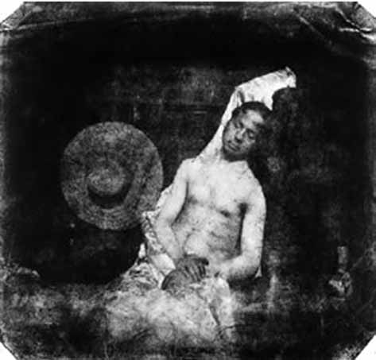Abraham Lincoln
Lincoln's head on John Calhoun's body.

General Ulysses Grant at the front
A montage of three different photos to create a non-existent heroic scene.
General Sherman and his subordinates
General Francis P. Blair (right) was added to the group shot after the fact.
The massacre of the Dominicans of Arcueil
Propaganda scene created by inserting portraits of Communards onto extras.
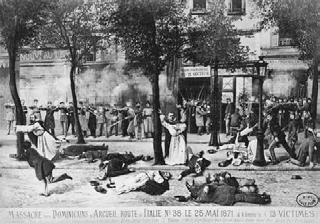The Cottingley Fairies
Cardboard cutout fairies to deceive the public and the press.
Stalin and Nikolai Yezhov
The "disappearance" of former allies turned enemies.
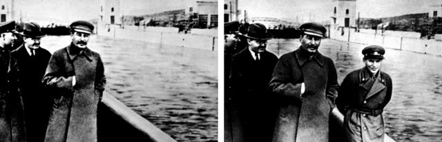Mao Zedong
Po Ku was erased from the original photo at Mao's request.
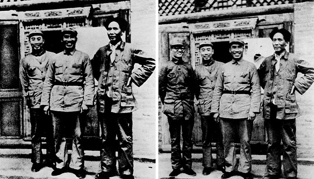Adolf Hitler and Goebbels
Removal of Joseph Goebbels from the original shot.
Mackenzie King and Queen Elizabeth
George VI was erased to highlight the Canadian Prime Minister.
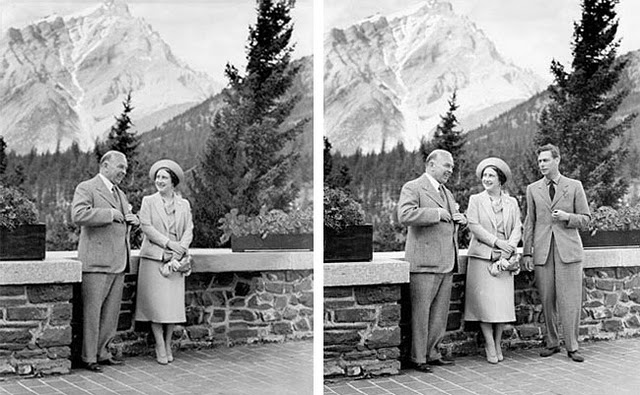Mussolini
Removal of the horse handler to accentuate the Duce's presence.
Fidel Castro and Carlos Franqui
Systematic erasure of dissidents from visual archives.
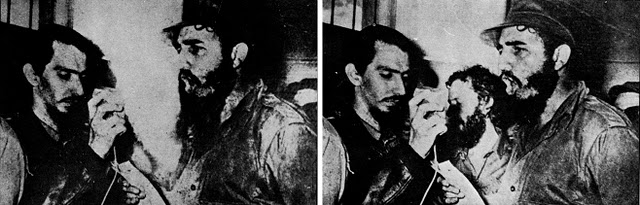Kent State shootings
Removal of a distracting pole in the frame (aesthetic retouching).
The Gang of Four
Erasure of several political figures during Mao's funeral.
Oprah Winfrey
A cover that became famous for its crude montage.
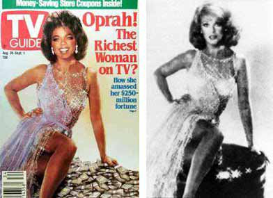The Luxor massacre
Dramatic accentuation by adding "blood" (coloring the water).
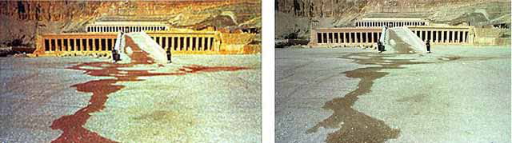University of Wisconsin
Insertion of a Black student to simulate the institution's diversity.
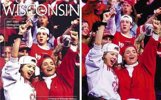Kate Winslet for GQ
The digital slimming of her legs that caused a controversy.
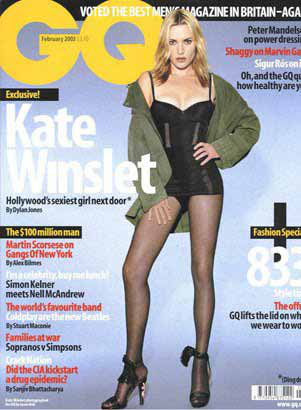George W. Bush
"Copy-pasting" soldiers to densify the crowd in the background.
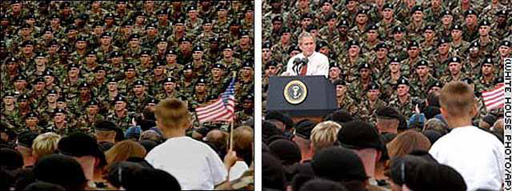Nicolas Sarkozy (Paris Match)
Erasure of an unsightly love handle during his vacation in Wolfeboro.
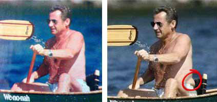Dario and the FARC
Manipulation of the scene to transform an ordinary context into a threat.
Rachida Dati (Le Figaro)
Erasure of a luxurious ring (Chaumet) on the photo of the Minister of Justice.
Tiger Woods (Vanity Fair)
Major aesthetic correction for the magazine cover.
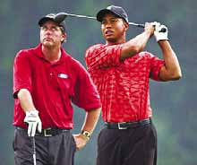Silvio Berlusconi
Systematic cosmetic retouching of Il Cavaliere.
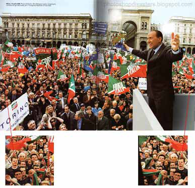The UMP and the Colmar rally
A "densified" crowd by adding sections of the audience through montage.
The retouched explosion
Addition of dramatic effects to an explosion scene.
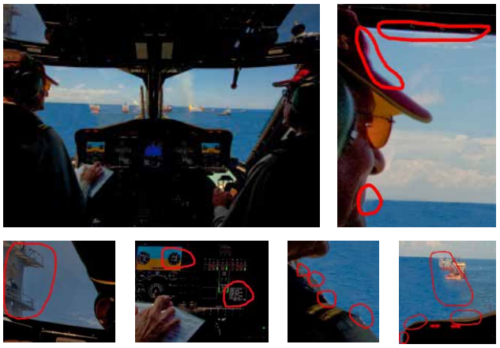Conclusion
Retouching was not born with the pixel. Yesterday with a brush or in a darkroom, today by algorithm, image manipulation is a tool of power, commerce, and art.
Every image is a construction: it is up to us to define where processing ends and deception begins.